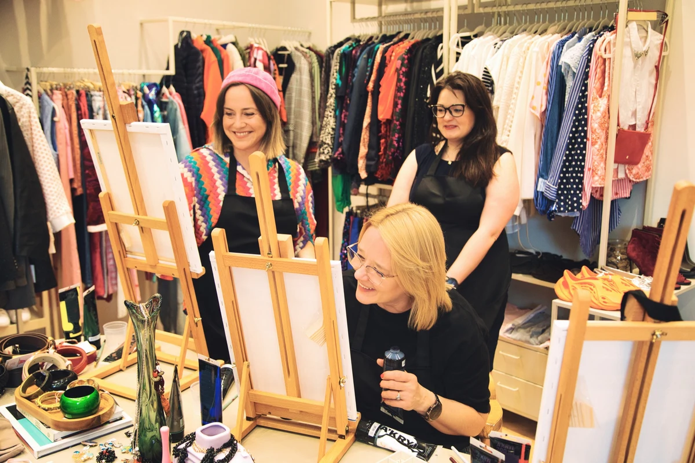

Rzeczy z historią. Ludzie z pasją.
Dobry styl ma
ciąg dalszy
Ariańska Selection to selekcjonowany second hand w Krakowie. Miejsce pełne perełek z drugiego obiegu, które zasługują na kolejną historię.
My wybieramy rzeczy z charakterem.
Ty nadajesz im swój.